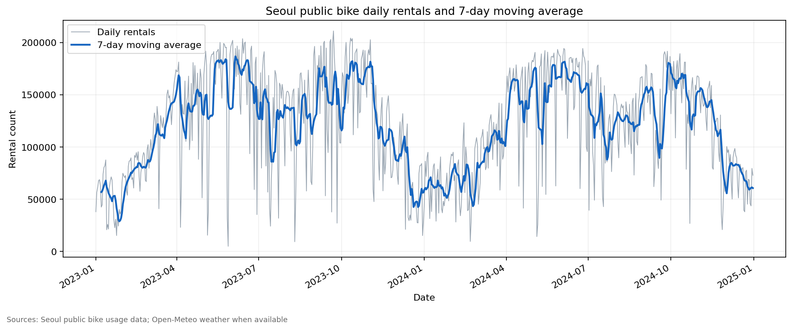
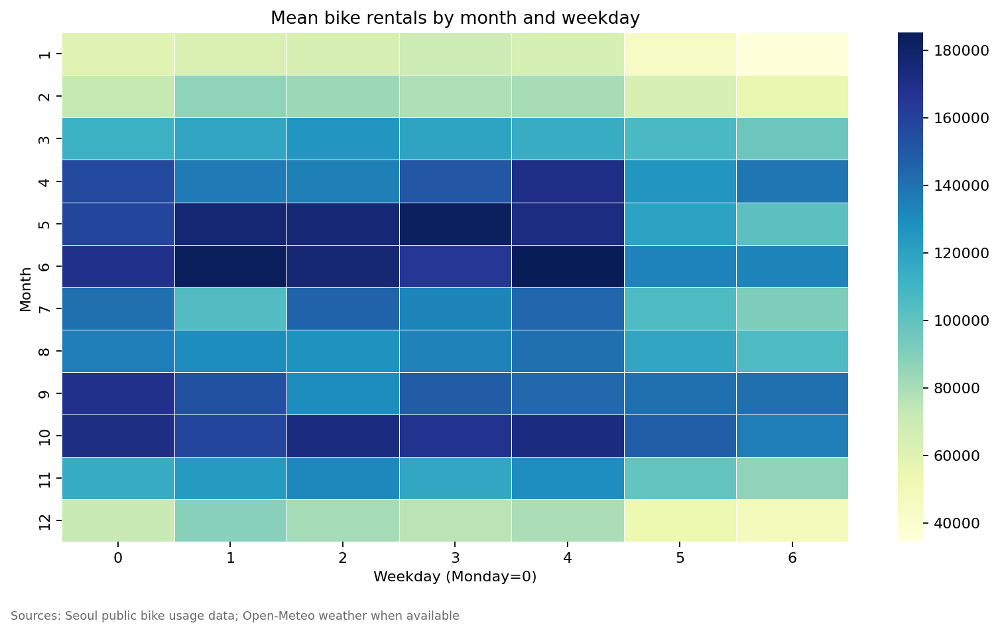
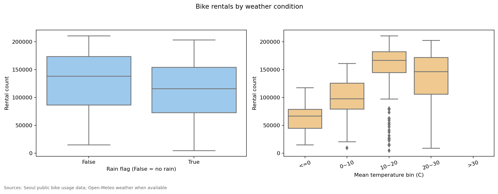
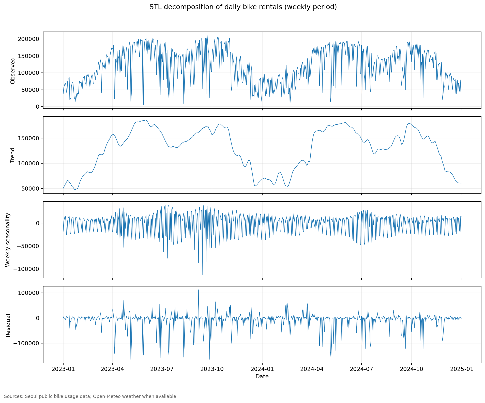
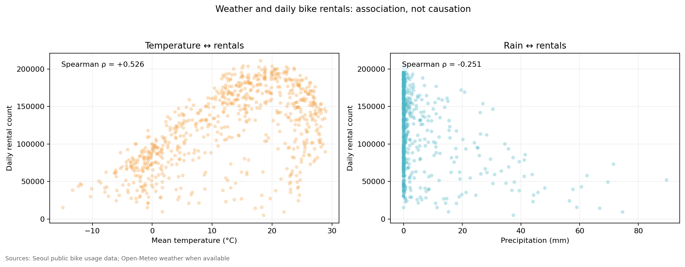

계절성은 수요의 바닥선을 다시 그린다.
관찰: 6월 평균은 1월의 2.85배다. 기온·일조시간과 운영 정책이 함께 움직였을 가능성이 있어, 예측에는 월별 baseline이 필요하다.
731일의 서울시 따릉이 이용량을 따라가며 도시의 리듬을 읽었다. 계절, 요일, 날씨가 수요를 어떻게 흔드는지—그래프 뒤의 의미를 데이터로 확인하는 분석 노트.
2023.01 — 2024.12
January → June average
rain vs. no rain
Friday vs. Sunday
일별 노이즈를 그대로 믿지 않고 7일 이동평균, 월·요일 집계, 날씨 구간, STL 분해를 겹쳐 보았다. 같은 숫자도 어떤 렌즈로 보느냐에 따라 다른 질문을 만든다.

daily rentals / rolling mean

average rentals

rain / temperature bins

trend / seasonal / residual

temperature / rain / rentals
관찰(Fact)과 해석(Hypothesis)을 분리했다. 인과를 단정하는 대신 다음 의사결정과 실험으로 이어질 수 있는 문장으로 바꿨다.
관찰: 6월 평균은 1월의 2.85배다. 기온·일조시간과 운영 정책이 함께 움직였을 가능성이 있어, 예측에는 월별 baseline이 필요하다.
관찰: 금요일 133,449건은 일요일보다 37.2% 높다. 출퇴근 수요 가설은 시간대·공휴일·대여소 데이터로 검증해야 한다.
관찰: 비 온 날은 평균 112,464건으로 맑은 날보다 13.3% 낮고, 0℃ 이하는 63,039건이다. Spearman ρ도 기온은 +0.526, 강수량은 −0.251이지만, 이는 인과관계가 아니라 다음 검증을 위한 신호다.
관찰: 2023-08-10은 전일 대비 약 94% 급감했고 강수량은 74.6mm였다. 폭우·휴일·운영 이슈를 원본 로그와 대조해야 한다.
서울 열린데이터광장의 서울시 전체 일별 대여건수 731개에 서울 중심 격자의 Open-Meteo 일평균기온·강수량을 결합했다. 날짜를 정렬하고, 결측·중복·음수 이용량을 점검했으며, 이상치는 삭제하지 않고 flag로 남겼다. 이 페이지의 차트와 문장은 재현 가능한 Python 파이프라인에서 생성됐다.